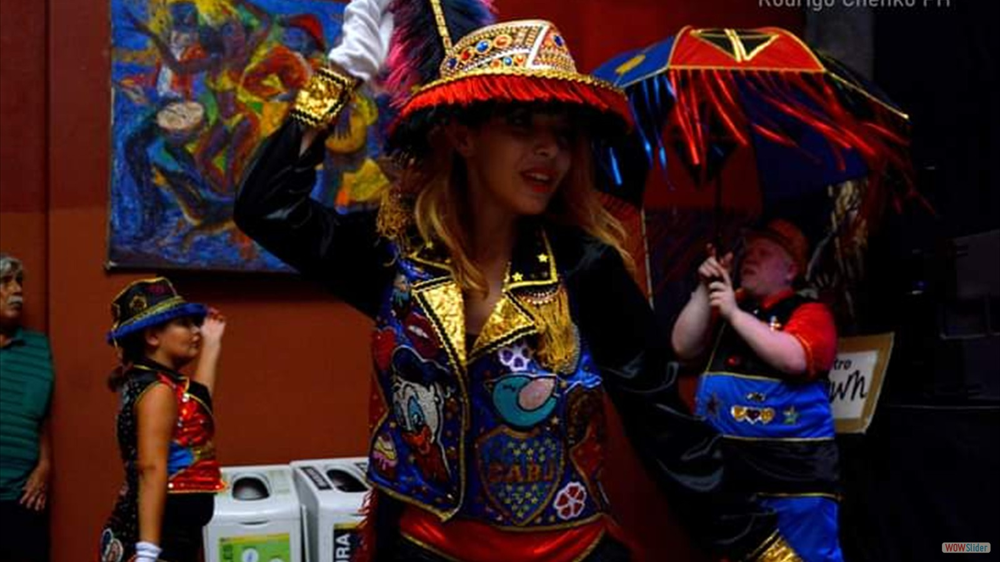
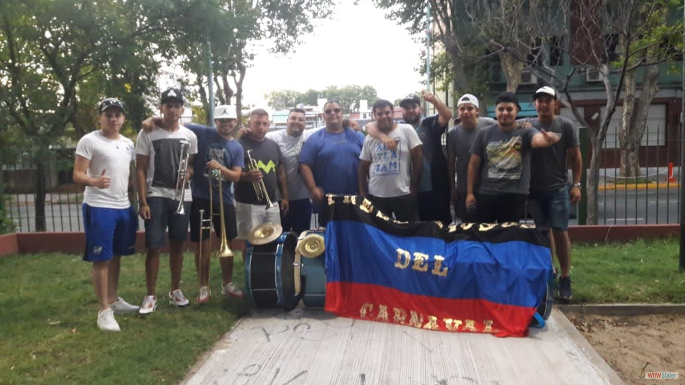
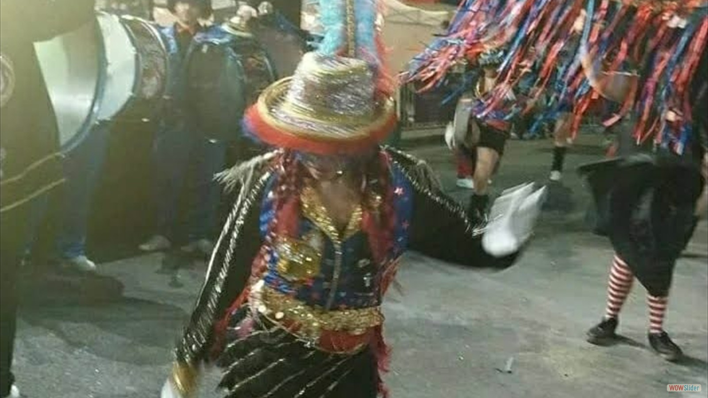

¡Bienvenidos!
Los Prestigiosos
Esta murga fue creada en el año 2019 por un grupo de amigos: Leo Rodríguez, Antonella Albamonte, Leandro Videla, Ana Vera, Roger González y Yanina Ibañez.
Inicios
Empezamos a buscar una plaza libre, sin ocupar por otra murga. Cuando encontramos el parque Onega que es donde estamos ahora, nos dieron un mes de prueba en la comisión para ver si ningún vecino se quejaba. Nos dieron permiso provisorio. Si juntábamos diez denuncias no nos daban esa plaza. Y hubiéramos tenido que buscar otra. Por suerte nunca tuvimos problemas. Así que nos dieron el permiso que va de marzo a noviembre, una vez por semana dos horas de ensayo, y de diciembre a febrero otro permiso que nos permite sumar dos días de ensayo, también de dos horas. Para elegir los colores, la comisión de carnaval tiene que autorizar para no ser igual a otras murgas. Por eso tenemos cuatro colores: negro, azul, rojo y dorado.
Ubicación
- 
- 
- 
")